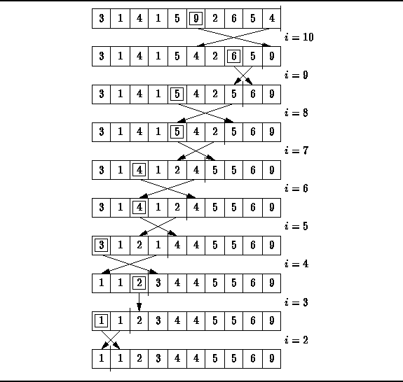

Data Structures and Algorithms
with Object-Oriented Design Patterns in Java
Data Structures and Algorithms
with Object-Oriented Design Patterns in Java
The simplest of the selection sorts is called
straight selection .
Figure  illustrates how straight selection works.
In the version shown,
the sorted list is constructed from the right
(i.e., from the largest to the smallest element values).
illustrates how straight selection works.
In the version shown,
the sorted list is constructed from the right
(i.e., from the largest to the smallest element values).

Figure: Straight selection sorting.
At each step of the algorithm, a linear search of the unsorted elements is made in order to determine the position of the largest remaining element. That element is then moved into the correct position of the array by swapping it with the element which currently occupies that position.
For example, in the first step shown in Figure ,
a linear search of the entire array reveals that 9 is the largest element.
Since 9 is the largest element, it belongs in the last array position.
To move it there, we swap it with the 4 that initially occupies that position.
The second step of the algorithm identifies 6 as the largest remaining
element an moves it next to the 9.
Each subsequent step of the algorithm moves
one element into its final position.
Therefore, the algorithm is done after n-1 such steps.
 Copyright © 1998 by Bruno R. Preiss, P.Eng. All rights reserved.
Copyright © 1998 by Bruno R. Preiss, P.Eng. All rights reserved.